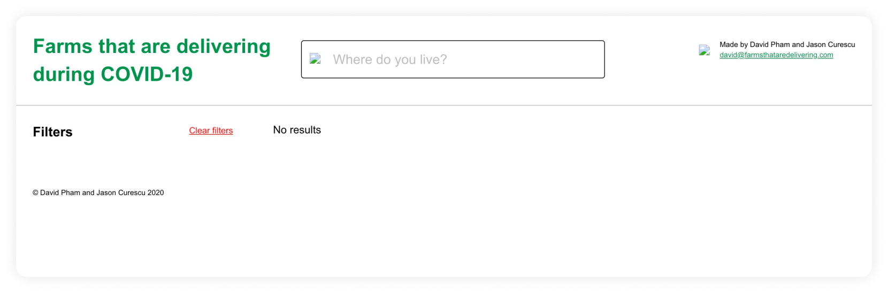
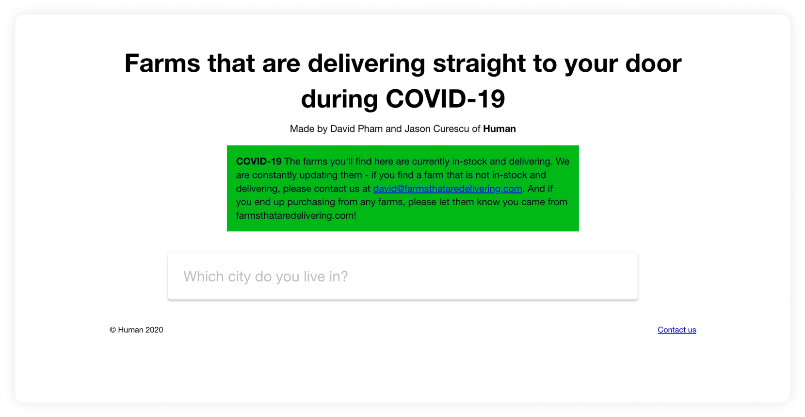
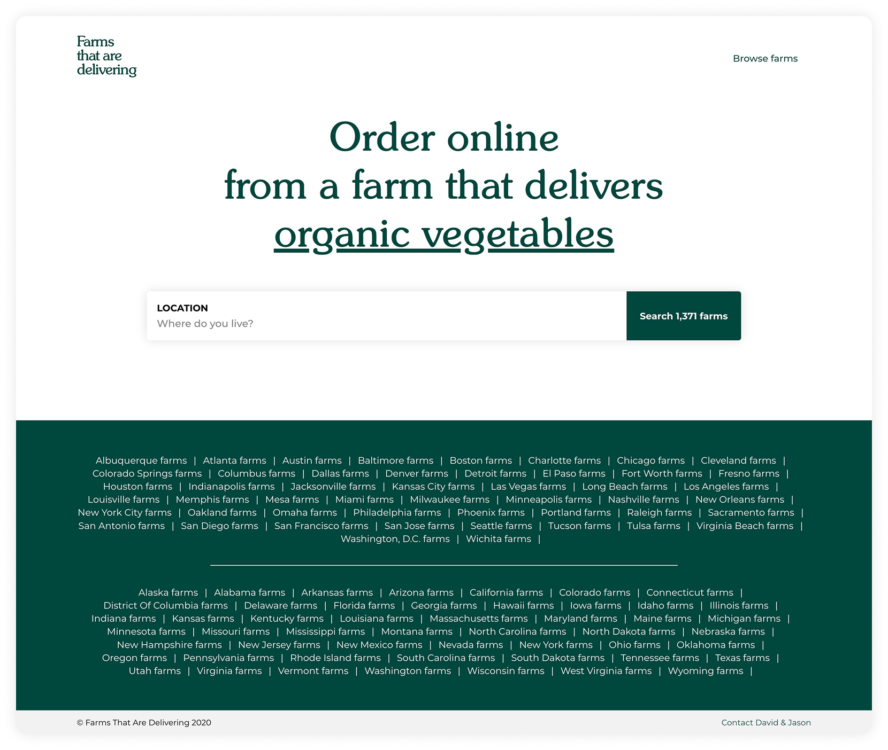
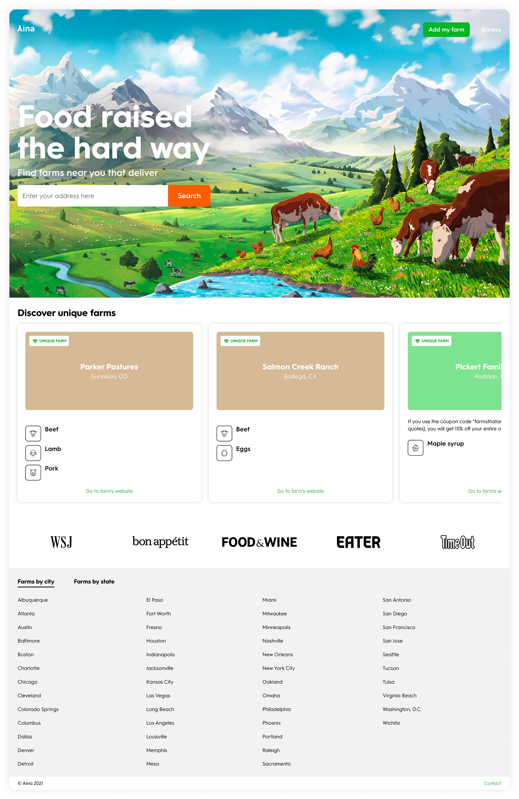

Product Design & UX Strategy
Branding & Visual Identity
Information Architecture &
Database Planning
User Research & Insight Gathering
Product Growth & Iteration
In the beginning of the COVID-19 pandemic when grocery stores were struggling to keep shelves stocked, many people didn’t realize that local farms still had plenty of fresh food available. They just didn’t have a way to reach consumers directly. At the same time, small farms were losing restaurant and wholesale business and needed new ways to sell their products. Aina was created to close that gap, making it easy for people to discover nearby farms and shop from them directly, without middlemen.
Aina is an online platform that connects people directly to over 1,300 sustainable farms across the U.S. It lets users search by location, product type, or delivery method, then links them straight to the farm to place an order. Aina highlights eco-conscious farms that prioritize sustainability, humane practices, and transparency, making it easier to shop local and support independent growers.
Aina first launched in April 2020 under the name Farms That Are Delivering, starting with a small list of farms around New York City that offered direct-to-door delivery. As the site started picking up traction on social media and in the press, our traffic quickly grew. We dug through over 15,000 farms across the U.S. and curated a directory of about 1,300 that delivered locally or nationwide. For each farm, we logged everything from what they sold to how animals were raised—their feed, breeds, butchering methods, and more. Within the first three months, the site had over 1 million searches. We eventually rebranded as Aina (which means “land” or “earth” in Hawaiian) and began improving the site as we learned more about how visitors were using it. We tweaked the design, refined the search experience, and highlighted the farms we discovered along our research that were doing things differently than your regular conventional farm.
Version 1 of Farms that are Delivering
Version 2 of Farms that are Delivering
Version 3 of Farms that are Delivering
We rebranded to Aina and created the final version of the website
